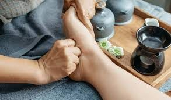

The Physical and Mental Health Benefits of Foot Reflexology

The Physical and Mental Health Benefits of Foot Reflexology
Welcome to Reflex Divine Bio Acu Medical Care, in our fast-paced, often stressful world, finding holistic ways to care for both our physical and mental health is essential. Foot reflexology, an ancient healing practice, offers a unique approach to achieving balance, relaxation, and overall well-being. By stimulating specific pressure points in the feet, reflexology helps address various health issues while promoting deep relaxation. In this post, we’ll dive into the physical and mental health benefits of foot reflexology and explore why it’s worth incorporating into your self-care routine.
1. Physical Health Benefits of Foot Reflexology
- Improved Circulation
One of the most immediate physical benefits of foot reflexology is improved blood circulation. By stimulating pressure points on the feet, reflexology enhances blood flow throughout the body. This can lead to better oxygen and nutrient delivery to tissues and organs, resulting in improved overall health.
- Pain Relief
Reflexology is often used to alleviate pain, particularly in the feet, legs, back, and head. For those suffering from conditions like arthritis, plantar fasciitis, or chronic back pain, foot reflexology can provide natural pain relief by targeting nerve endings and pressure points linked to the affected areas.
- Boosted Immune System
Foot reflexology is believed to strengthen the immune system by encouraging the removal of toxins and improving lymphatic circulation. Regular sessions can help your body fend off illness more efficiently, contributing to long-term health and wellness.
- Support for Digestive Health
Reflexologists believe that specific areas on the feet correspond to digestive organs like the stomach, intestines, and liver. By applying pressure to these areas, reflexology can help improve digestion, relieve constipation, and alleviate bloating or discomfort.
- Enhanced Sleep Quality
If you struggle with insomnia or restless sleep, foot reflexology might help. By reducing tension and promoting relaxation, reflexology can ease the mind and body into a more restful state, leading to better and deeper sleep.
2. Mental Health Benefits of Foot Reflexology
- Stress Reduction
In today’s hectic world, stress is a major contributor to both physical and mental health issues. Reflexology helps activate the body’s natural relaxation response, reducing stress levels by calming the nervous system. After a session, many people report feeling lighter, more balanced, and emotionally centered.
- Anxiety Relief
Foot reflexology has been shown to help manage anxiety and promote mental clarity. By stimulating specific pressure points, reflexology triggers the release of endorphins, the body’s natural mood-enhancing hormones. These hormones can lower feelings of anxiety and create a sense of inner peace and calm.
- Emotional Balance
Foot reflexology doesn’t just relax the body; it can also support emotional well-being. Reflexologists often work on areas that correspond to emotional centers in the body, helping to clear emotional blockages and restore harmony. This makes it an excellent complementary therapy for those dealing with emotional stress or upheaval.
- Improved Focus and Mental Clarity
In addition to relaxation, reflexology can also boost concentration and mental clarity. By clearing energy pathways and promoting circulation, it helps improve focus, memory, and cognitive function. Whether you’re trying to stay sharp at work or handle daily tasks more efficiently, reflexology can be an excellent tool for mental wellness.
3. How Reflexology Works: The Connection Between Feet and Body
The core idea behind foot reflexology is that specific areas of the feet, called “reflex zones,” correspond to different parts of the body. When a reflexologist applies pressure to these zones, it stimulates the corresponding organs, glands, or systems, encouraging healing and balance. The feet are like a map of the body, with pressure points linked to everything from the heart and lungs to the digestive system and brain.
4. Incorporating Reflexology into Your Wellness Routine
Whether you’re dealing with chronic pain, high stress levels, or simply want to improve your overall health, foot reflexology is an excellent addition to your wellness routine. You can enjoy the benefits of reflexology by visiting a certified reflexologist or even learning some basic techniques to practice at home. Regular sessions, combined with a healthy lifestyle, can significantly enhance both physical and mental well-being.
- Improved Circulation
One of the most immediate physical benefits of foot reflexology is improved blood circulation. By stimulating pressure points on the feet, reflexology enhances blood flow throughout the body. This can lead to better oxygen and nutrient delivery to tissues and organs, resulting in improved overall health.
- Pain Relief
Reflexology is often used to alleviate pain, particularly in the feet, legs, back, and head. For those suffering from conditions like arthritis, plantar fasciitis, or chronic back pain, foot reflexology can provide natural pain relief by targeting nerve endings and pressure points linked to the affected areas.
- Boosted Immune System
Foot reflexology is believed to remove the toxins in our body and to strengthen the immune system and improving lymphatic circulation. Regular sessions can help your body fend off illness more efficiently, contributing to long-term health and wellness.
- Support for Digestive Health
Reflexologists believe that specific areas on the feet correspond to digestive organs like the stomach, intestines, and liver. By applying pressure to these areas, reflexology can help improve digestion, relieve constipation, and alleviate bloating or discomfort.
- Enhanced Sleep Quality
If you struggle with insomnia or restless sleep, foot reflexology might help. By reducing tension and promoting relaxation, reflexology can ease the mind and body into a more restful state, leading to better and deeper sleep.
- Mental Health Benefits of Foot Reflexology
- Stress Reduction
In today’s hectic world, stress is a major contributor to both physical and mental health issues. Reflexology helps activate the body’s natural relaxation response, reducing stress levels by calming the nervous system. After a session, many people report feeling lighter, more balanced, and emotionally centered.
- Anxiety Relief
Foot reflexology has been shown to help manage anxiety and promote mental clarity. By stimulating specific pressure points, reflexology triggers the release of endorphins, the body’s natural mood-enhancing hormones. These hormones can lower feelings of anxiety and create a sense of inner peace and calm.
- Emotional Balance
Foot reflexology doesn’t just relax the body; it can also support emotional well-being. Reflexologists often work on areas that correspond to emotional centers in the body, helping to clear emotional blockages and restore harmony. This makes it an excellent complementary therapy for those dealing with emotional stress or upheaval.
- Improved Focus and Mental Clarity
In addition to relaxation, reflexology can also boost concentration and mental clarity. By clearing energy pathways and promoting circulation, it helps improve focus, memory, and cognitive function. Whether you’re trying to stay sharp at work or handle daily tasks more efficiently, reflexology can be an excellent tool for mental wellness.
- How Reflexology Works: The Connection Between Feet and Body
The core idea behind foot reflexology is that specific areas of the feet, called “reflex zones,” correspond to different parts of the body. When a reflexologist applies pressure to these zones, it stimulates the corresponding organs, glands, or systems, encouraging healing and balance. The feet are like a map of the body, with pressure points linked to everything from the heart and lungs to the digestive system and brain.
- Incorporating Reflexology into Your Wellness Routine
Whether you’re dealing with chronic pain, high stress levels, or simply want to improve your overall health, foot reflexology is an excellent addition to your wellness routine. You can enjoy the benefits of reflexology by visiting a certified reflexologist or even learning some basic techniques to practice at home. Regular sessions, combined with a healthy lifestyle, can significantly enhance both physical and mental well-being.
Conclusion
Foot reflexology is a natural and holistic way to boost your physical and mental health. By improving circulation, reducing pain, supporting the immune system, and promoting relaxation, reflexology offers a wealth of benefits that can help you feel better from the ground up. Whether you’re seeking stress relief, better sleep, or enhanced overall wellness, the ancient art of foot reflexology provides a gentle, non-invasive path to healing.